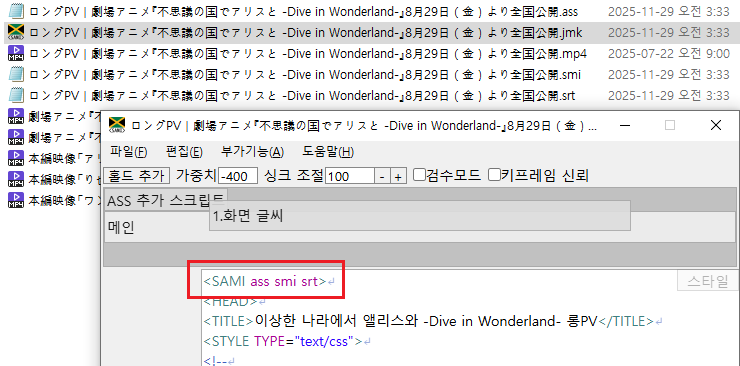
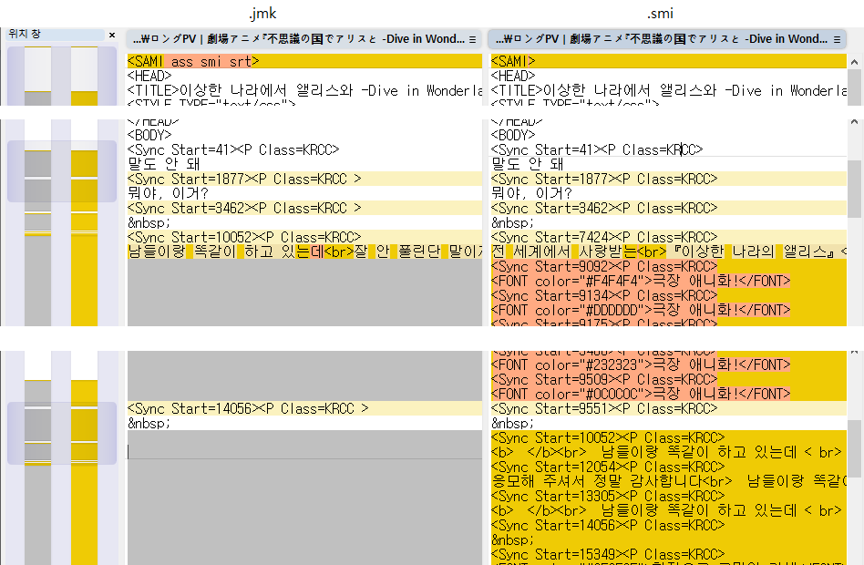
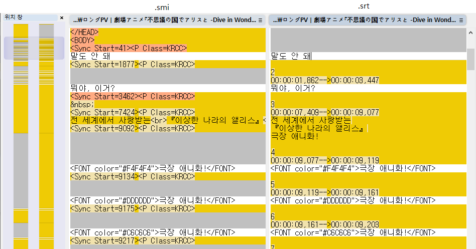

Jamaker에선 기본적으로 재생 가능한 smi 파일 내에, 정규화 이전 원본 데이터를 주석으로 저장합니다.
이에 따른 주석을 제외한, 순수한 smi 파일을 얻고 싶은 경우를 위해 내보내기 기능을 제공합니다.
하지만 이런 경우, 파일 경로 관리 등에 어려움이 생기게 됩니다.
또, ASS 자막 결과물만을 위해 Jamaker 기반으로 작업한 경우,
같은 폴더에 smi 파일과 ass 파일이 함께 있으면 재생 시 번거로움이 생기게 됩니다.
이에 따라 프로젝트 파일 형식(.jmk)으로 저장하는 기능을 추가했습니다.
프로젝트 파일은 정규화 등을 거치지 않은 원형만을 저장하며,
기존 ASS 변환 기능처럼, <SAMI> 태그에 속성을 추가하고 저장하면 결과물이 함께 생성됩니다.
속성에는 ass, smi 외에 srt도 지원합니다.



srt 파일은 smi 출력물을 기반으로 생성합니다.